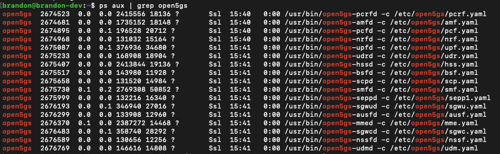

5G Core - Building Open5GS¶
This guide will walk you through installing Open5Gs in Ubuntu environment. Please check the official document for other environments as you might need to build from source.
1. Getting MongoDB¶
Import the public key used by the package management system.
sudo apt update
sudo apt install gnupg
curl -fsSL https://pgp.mongodb.com/server-6.0.asc | sudo gpg -o /usr/share/keyrings/mongodb-server-6.0.gpg --dearmor
Create the list file /etc/apt/sources.list.d/mongodb-org-6.0.list for your version of Ubuntu.
On ubuntu 22.04 (Jammy):
echo "deb [ arch=amd64,arm64 signed-by=/usr/share/keyrings/mongodb-server-6.0.gpg] https://repo.mongodb.org/apt/ubuntu jammy/mongodb-org/6.0 multiverse" | sudo tee /etc/apt/sources.list.d/mongodb-org-6.0.list
2. Installing Open5GS¶
Install Open5GS using apt
Verify that it’s running

3. Install the WebUI of Open5GS¶
The WebUI allows you to interactively edit subscriber data.
Install Node.js
# Download and import the Nodesource GPG key
sudo apt update
sudo apt install -y ca-certificates curl gnupg
sudo mkdir -p /etc/apt/keyrings
curl -fsSL https://deb.nodesource.com/gpgkey/nodesource-repo.gpg.key | sudo gpg --dearmor -o /etc/apt/keyrings/nodesource.gpg
# Create deb repository
NODE_MAJOR=20
echo "deb [signed-by=/etc/apt/keyrings/nodesource.gpg] https://deb.nodesource.com/node_$NODE_MAJOR.x nodistro main" | sudo tee /etc/apt/sources.list.d/nodesource.list
# Run Update and Install
sudo apt update
sudo apt install nodejs -y
Install WebUI
Now when you goto http://localhost:9999 you should be able the see the graphical UI like below.
Start WebUI
OPTIONALLY If you want to access the webUI from another machine, you can modify the index.js file to listen to 0.0.0.0.
-
Locate where the
index.jsis at.
Check the directories listed and find the
serverdirectory which is where the js file is in. Typically located in/usr/lib/node_modules/open5gs/server/index.js -
Modify the
listencall to bind to0.0.0.0'
-
Optionally test with
curl
-
Connect to it on the machine. For me it was
http:://192.168.1.6:9999
4. Configuring Open5GS¶
Now that you’ve installed Open5GS, you need to modify the configuration and set up your network for proper functionality. Here’s a brief overview:
- Modify configuration files
- Update the
*.yamlfiles for each component in the/etc/open5gs/directory - Configure IP addresses, PLMN (Public Land Mobile Network) IDs, and other settings to match your deployment. Note that Open5GS comes ready to run on one machine, only modify IP addresses if your UE & gNB is on a different machine.
- You will need to modify the PLMN in your NRF and AMF config, and in case of AMF, further modify the TAC information.
- If you are aiming to connect an external gNB to your core, you will also need to change the NGAP bind address of the AMF and the GTPU bind address of the UPF. If you are running an gNB stack locally, you will not need to make these changes.
- Update the
- Add Subscriber Data
- Enter your UE details like IMSI, keys, and APNs using the WebUI (or CLI)
nrf.yaml¶
Modify /etc/open5gs/nrf.yaml to set the PLMN ID.
amf.yaml¶
Modify /etc/open5gs/amf.yaml to set the NGAP IP address, PLMN ID, TAC and NSSAI.
ngap:
server:
- address: 127.0.0.5
metrics:
server:
- address: 127.0.0.5
port: 9090
guami:
- plmn_id:
mcc: 001
mnc: 01
amf_id:
region: 2
set: 1
tai:
- plmn_id:
mcc: 001
mnc: 01
tac: 1
plmn_support:
- plmn_id:
mcc: 001
mnc: 01
s_nssai:
- sst: 1
upf.yaml¶
Modify /etc/open5gs/upf.yaml to set the GTP-U address.
After configuring, restart the daemons.
sudo systemctl restart open5gs-nrfd
sudo systemctl restart open5gs-amfd
sudo systemctl restart open5gs-upfd
5. Registering Subscriber Information¶
Connect and login with admin account

Add subscriber information
-
Go to
subscriberMenu
-
Click
+button to add a new subscriber -
Fill the IMSI, security context(K, OPc, AMF), and APN of the subscriber

-
Click
SAVE
6. Uninstalling Open5GS and WebUI¶
Remove the Open5GS packages.
Remove the logs as well.
Remove the WebUI.
RESROUCES: Open5Gs Official Documentation